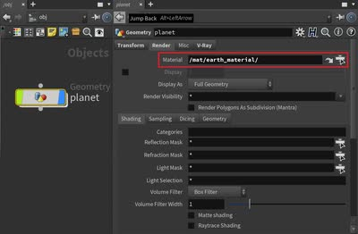

記事・リンクを検索
⌘K
5 件のポスト

V-Ray for Houdiniでのディスプレイスメント適用方法についてのTips。単一のDisplacementならobj階層でマテリアルをアサインし、複数のDisplacement Mapを使う場合はsop階層でPackしてからマテリアルをアサインする、という手順を解説している。

Steffen Hampel氏が雪の道路シーンを制作したプロセスを解説した記事「Sunny winter Road scene using V-ray & Nuke」。

モデリングから全工程をカバーする背景制作チュートリアル「Arch Masterclass I: Mastering Environments with Vray」。

3ds Maxを使った背景制作のチュートリアル「Japanese River」。詳細な解説のため、3ds Maxを使っていなくても学べる内容が多いとしている。

Steffen Hampel氏による、「Japanese Alley」という作品を制作するWingfoxのチュートリアル。MayaとV-Rayがメインに使用されている。